Soon after moving to Louisville in June, I decided to check out Kentucky Kingdom. I had heard of Kentucky Kingdom while in Louisville the year prior for research at the University of Louisville, and I had just taken a class about public amusement and its relation to American Culture. I went on June 18th, and these are my thoughts about each attraction I visited.
People Watching at Woodland Snacks
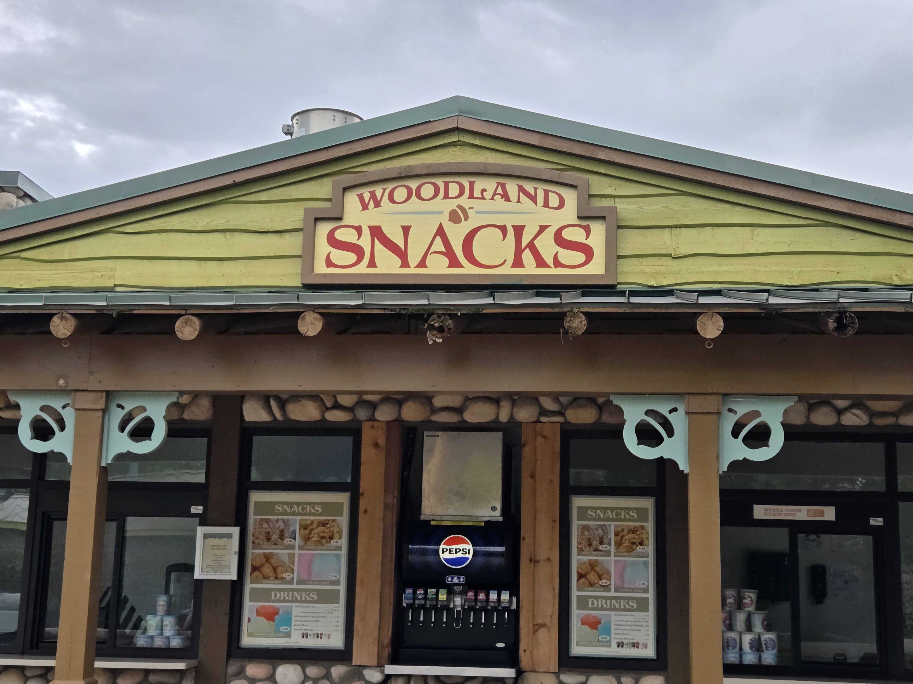
The area seemed relatively busy, taking into account the attendance on Thursday, but activity diminished when I started people watching around 4:30 pm. The area was a good place for people to relax and wind down amidst the different attractions, especially because the space contained adirondack chairs and a cornhole set. It was also nearby Happy Hollow, a place for little kids to safely play in. However, it was difficult to truly relax in the space because of all of the surrounding noise coming from overhead planes, the log flume and roller coasters, and from people walking by. The space also had a tarp covering half of the area for rain, but the tarp provided little protection when it did start to sprinkle, driving away people who were still there. The sprinkling only lasted like 5 minutes as well, to add insult to injury to the area.
Giant Wheel
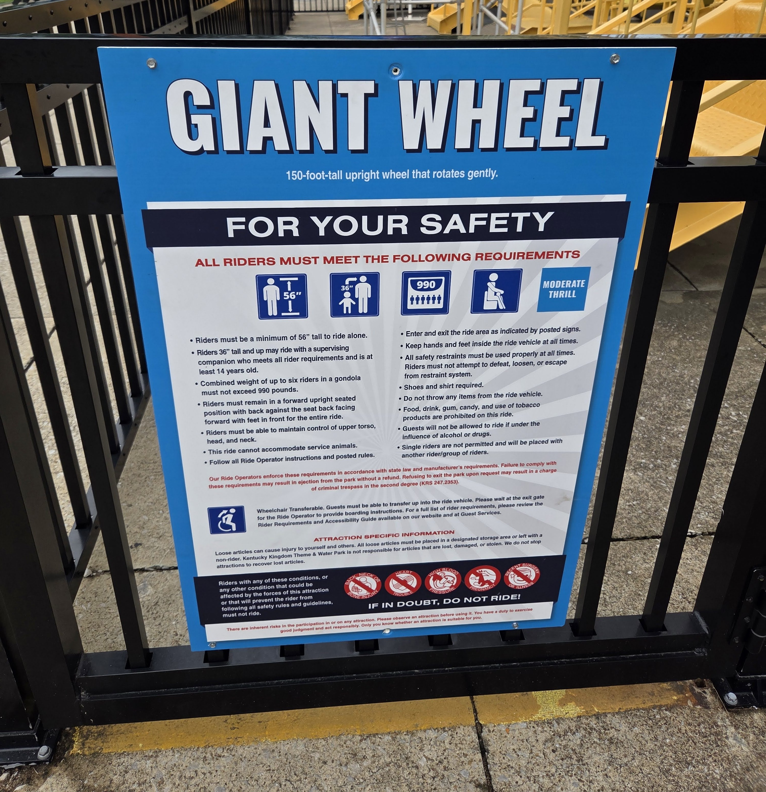
I wanted to ride this and take a picture of the park from the peak of the wheel, but I was told I couldn’t ride it since I was planning on riding it alone. I get why an odd amount of people can’t ride it, but it’s still unfortunate. I do wonder why it’s called a “Giant” Wheel and not a “Ferris” Wheel.
Lunch at Treats and Eats
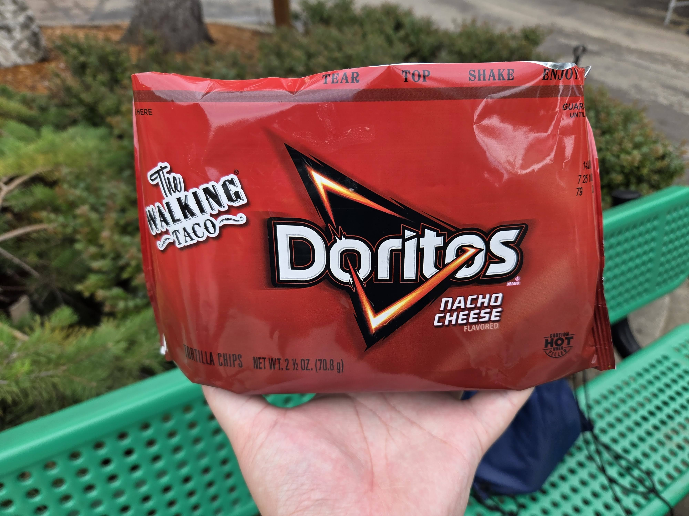
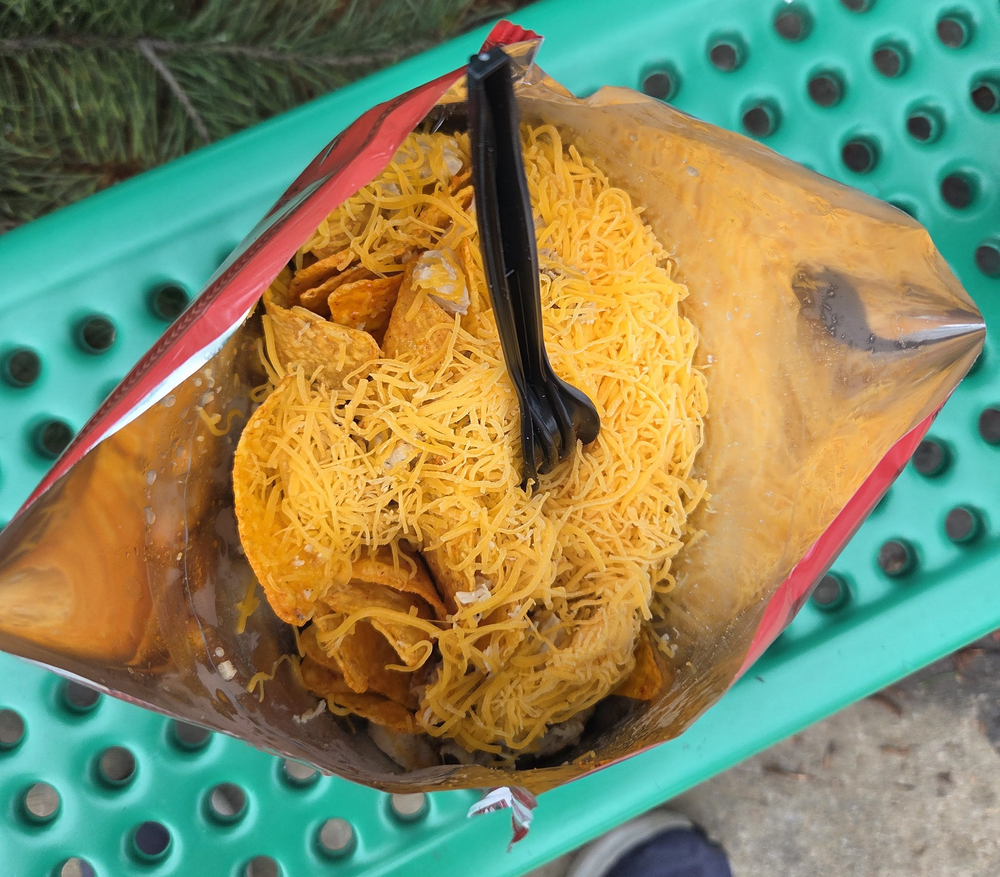
I wanted to challenge myself and get something that I don’t usually get at theme parks (namely chicken tenders and fries). This restaurant was the first one I saw upon entering the park, but I held off since I wanted to see what other options were available. After riding Lightning Run and Flying Fox, it was after 1 o’clock and I was getting hungry, so I went back to Treats and Eats since I knew I’d get something I don’t usually get. It was good, but it got soggier the longer I ate it since the chicken juice was softening the chips. I was surprised at the portion size compared to what I paid, since I was expecting something smaller for being park food. The bag was very hot when I first got it and there were very few tables nearby, with all of them being used, so I had to sit at a bench and eat it awkwardly, hunched over with the bag on the seat. However, I didn’t know that Doritos made bags specifically for walking tacos, so I guess you learn something new every day.
Hollyhock and Roll
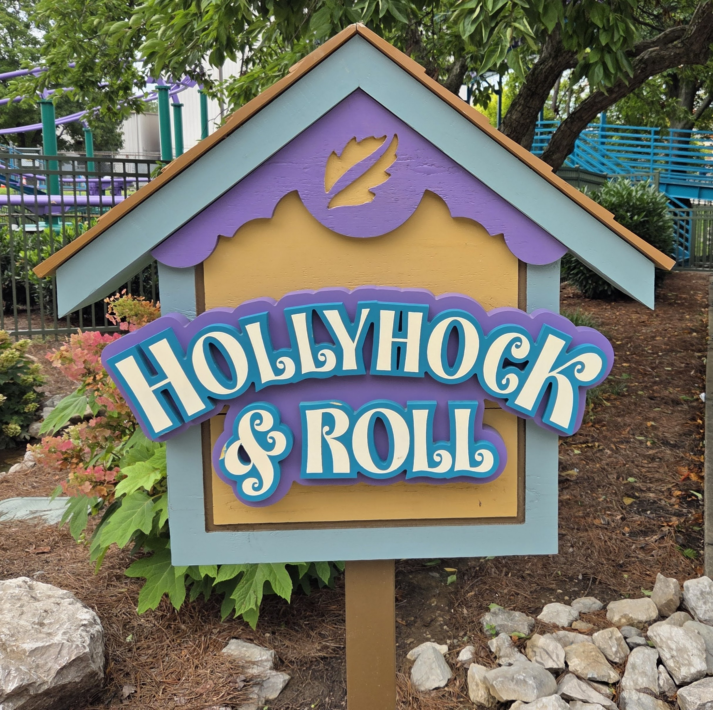
Unfortunately it was closed. I asked a nearby employee if it would be closed the entire day or just for a stretch of time, but he said he didn’t know. The ride still looked closed as I left the park, so I guess it was closed down for maintenance or something. Looking at the architecture of the ride, it didn’t look like I was missing much.
Wheels in the Wild Show
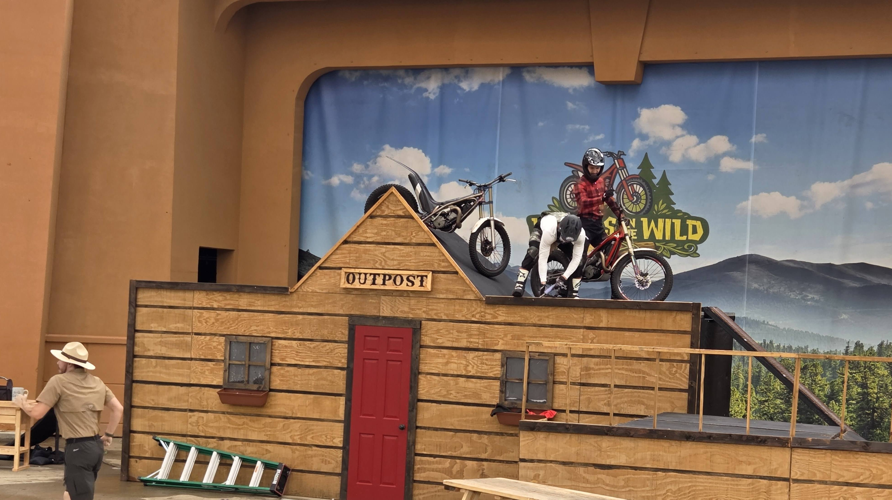
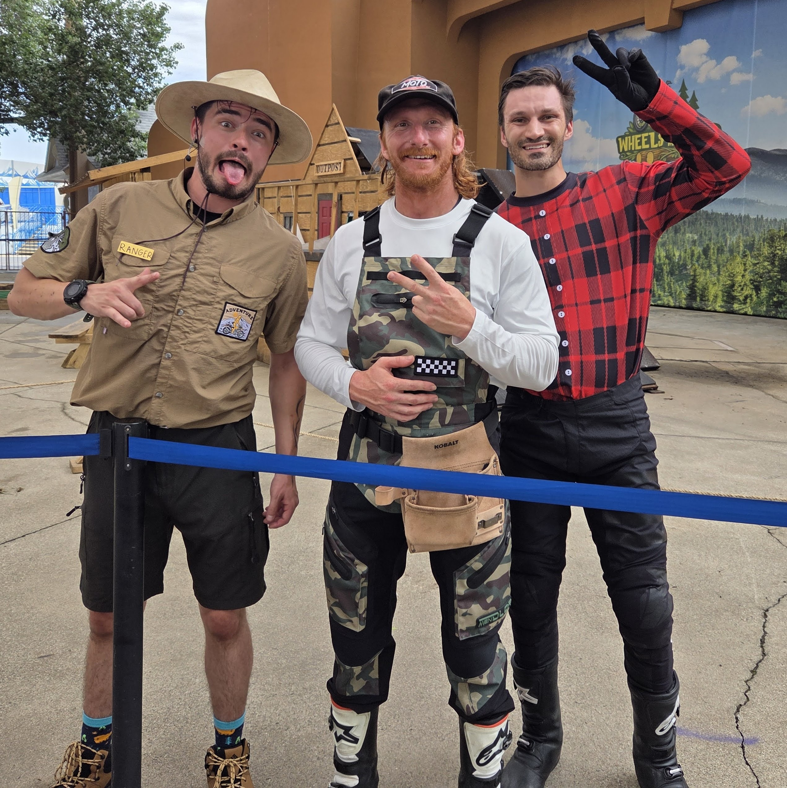
I was not initially planning on watching a show at Kentucky Kingdom, but it was an impulse decision right when the show started. Apparently Wheels in the Wild is a new show for the 2026 season, done by Moto Motion Entertainment. Because I wasn’t planning on going to the show and didn’t do research beforehand, I was pleasantly surprised by what I saw in the show (since I had no expectations), and I really liked it overall. The main thing that surprised me was the stunts that the bike riders pulled off during the show - the flips, wheelies, and jumps. I was also surprised by the craftsmanship of the Outpost structure, as it was able to hold up both bike riders and their bikes, as well as handle the riders driving and jumping onto them. Some of the humor was quippy and witty, and got a chuckle out of me at points. It had good audience engagement throughout the show, and the actors would acknowledge certain people in the audience to make them feel more connected to the show. All in all, the show surpassed my expectations and was worth watching.
Lightning Run
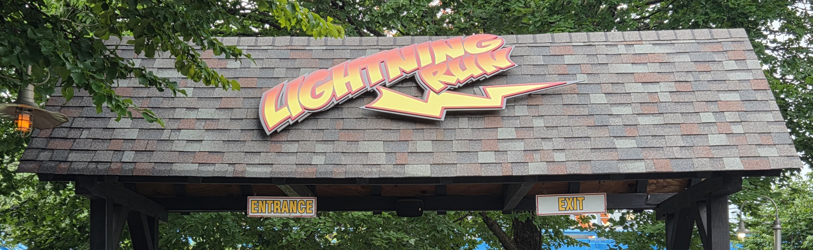
Lightning Run was the first ride of the day, and is #2 on my ranking of the park's coasters. The line was very short (~10 min), and I rode solo in car 1, seat 2L. The ride surprised me with how thrilling and fast it was, with numerous bumps that provided serious airtime. Felt similar to FireChaser Express at Dollywood, without the backwards portion. The coaster wasn’t the most enthralling, but it had moderate airtime and good speed, similar to how I felt about FireChaser Express. There wasn’t anything theming to the ride (which is common with coasters here), and it didn’t have a ride-specific gift shop (which was also common with other coasters here).
Flying Fox
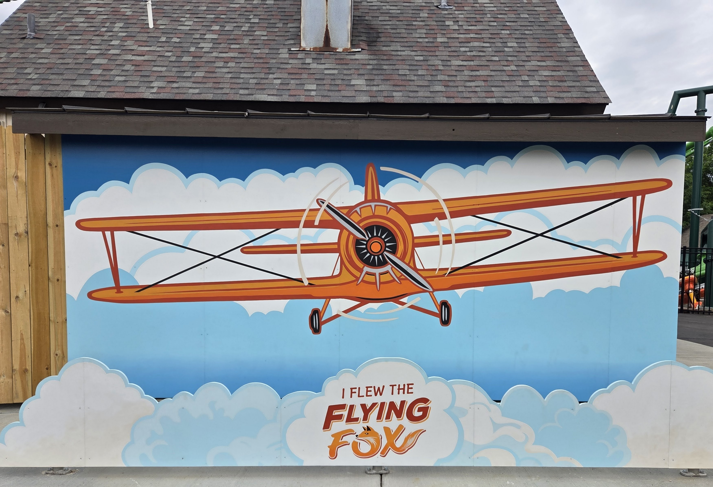
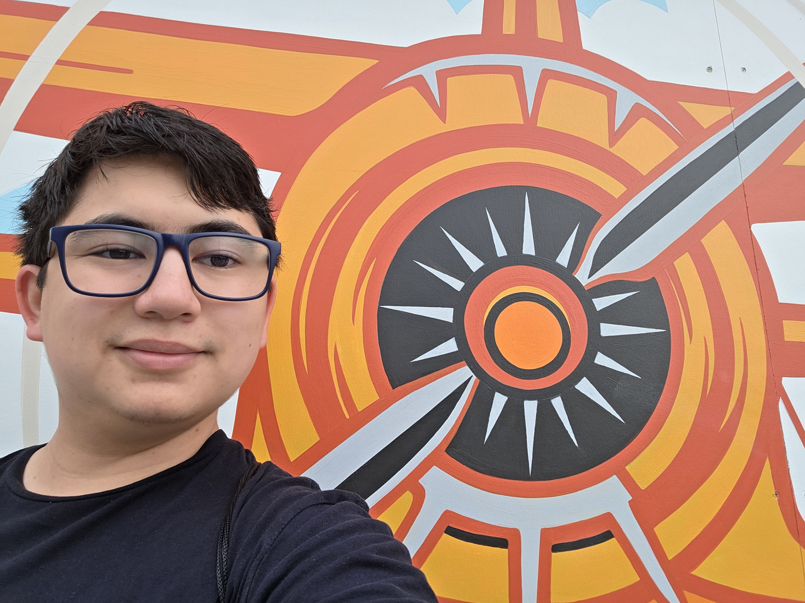
Flying Fox was the 2nd ride of the day, and #4 on my ranking. What disappointed me most about Flying Fox was its lack of theming during the ride proper. The theme for the ride was very strong, utilizing Kentucky’s cropdusting history to create a solid setting, using Jeb Fox to read out the ride’s safety regulation and occasional quips, and various elements of cropdusting, aviation, and workshopping present in the queue, but there was nothing on the coaster ride itself. A place that certainly could’ve had some decoration was the concrete underpass near the end of the ride, since decor could exist there more permanently than on other places of the track. For being a suspended coaster, the twists and turns on the track were enjoyable, and it felt similar to Big Bad Wolf: The Wolf’s Revenge at BGW. My issue with Flying Fox is that it seems to be selling you on this theme that it doesn’t deliver on, while other coasters here don’t have themes, but instead go all in on their ride experience.
Tin Lizzies
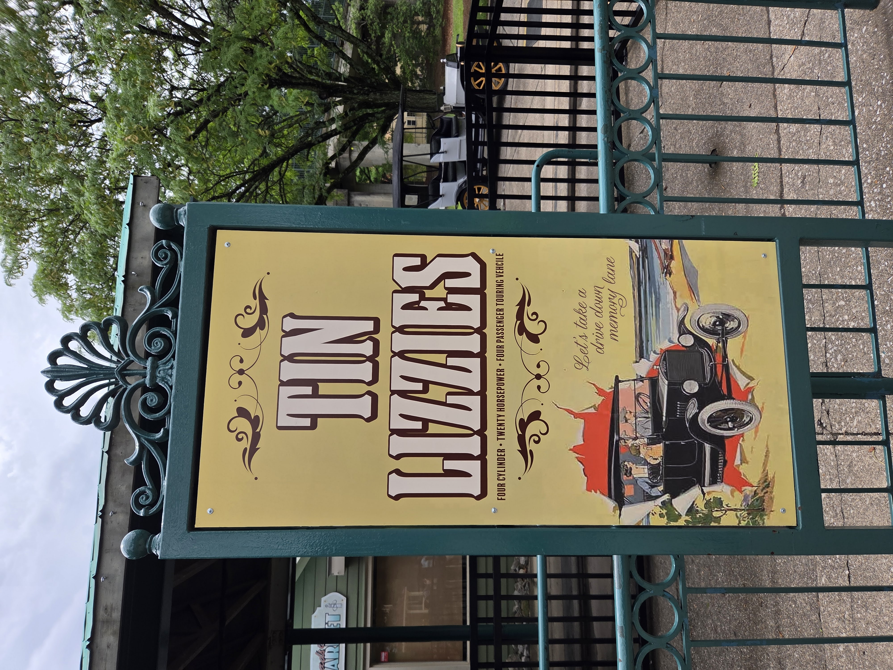
I had lunch right after riding Flying Fox, and so I wanted to wait a bit before riding any more coasters. I saw part of the course for Tin Lizzies as I was walking to the other section of Kentucky Kingdom, and came back to check out what the ride was. It was a self-driven, leisurely ride in an old-timey car on a predetermined path. I wish that the turning on the car was more responsive, as it constantly felt like I was hitting the rail I was meant to follow. The first 2 tunnels on the path were barren, but the last tunnel had some nice decor and foliage on it, almost giving a “stroll in the park” vibe to the ride. Overall, I enjoyed the slower paced nature of the ride, as it provided a break from the faster attractions offered.
Kentucky Flyer
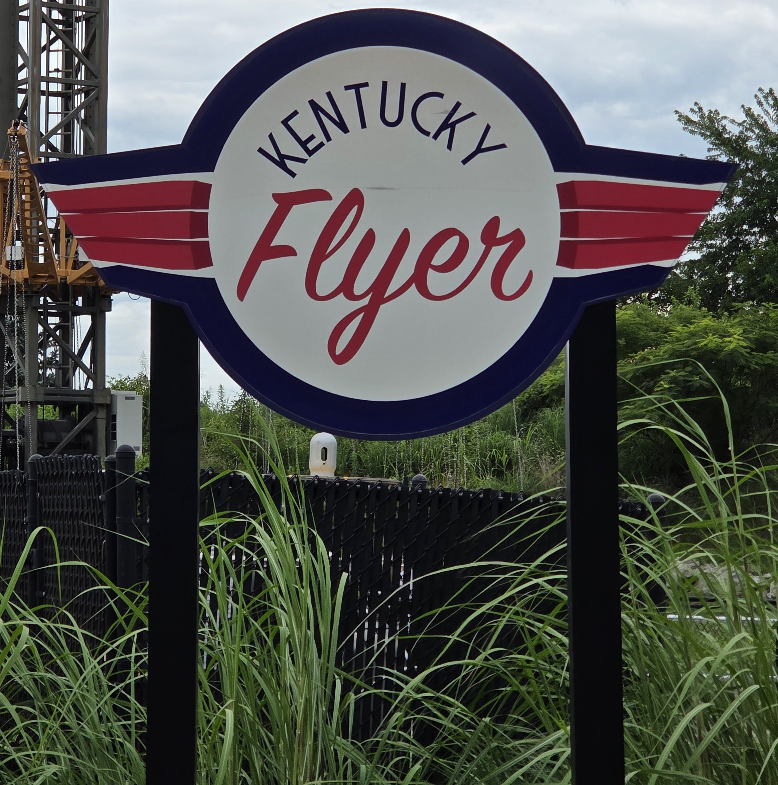
This one was the 3rd ride of the day, and the last on my ranking. Truthfully, the only reason it’s the lowest is because all of the other rides have something else going for them and Kentucky Flyer is just “okay.” Kentucky Flyer rides like Lightning Run, containing an initial drop and then relying on airtime from the speed and bumps throughout the ride. Since Kentucky Flyer is a wooden coaster, it felt a little rougher to ride, and it felt like an inferior Lightning Run in terms of ride feel. Since there was no line after the first ride, I rode it again, sitting in the very first seat in the first car. Sitting in the very front was a very exhilarating experience, though I wouldn’t suggest sitting in the very front for the first ride to get a more objective perspective of the ride. If this ride had a long line after the initial ride, I don’t think I would’ve waited to reride.
Discovery Meadow & Floral Frenzy
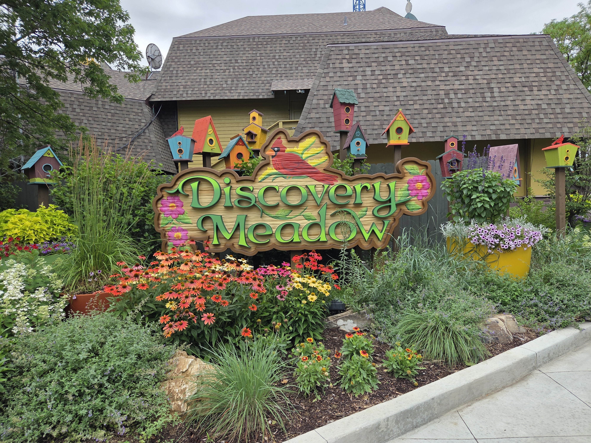
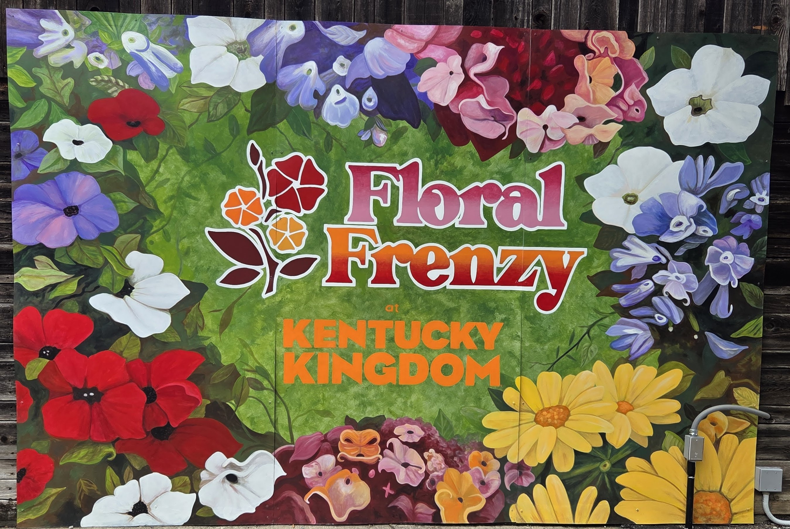
Discovery Meadow felt like a knock-off Wildwood Grove from Dollywood. The coasters and attractions here do fit the theme of a “perpetual garden party” and Kentucky Kingdom boasts that it has a “a Kentucky twist”, but the area doesn’t have much that makes it feel unique and Kentuckian. Floral Frenzy provides extra decor and makes the area look prettier, but there’s no depth to Floral Frenzy like there is with Dollywood’s Food and Flower Festival. Dollywood provides insight into why Dolly herself believes in the values and messages of the F&F Festival with signs and quotes from Dolly placed in strategic places around the park, while Floral Frenzy has little to no context on what it is and why it’s here (like no info signs around the park). Even though Discovery Meadow feels cheap and lacks attention to detail (even though it had an $11 million budget), it is still the best part of the park.
Woodland Run
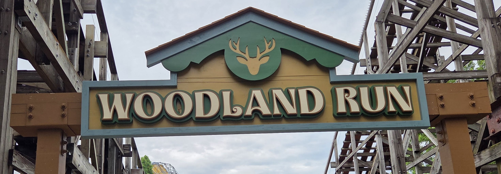
The 4th coaster I rode, and #3 on my list. There was no line, but I did have to wait for a cycle since they were prepping the coaster as I walked up. The ride experience of Woodland Run is similar to Lightning Run and Kentucky Flyer, though there wasn’t much airtime involved. The height for the initial drop was the height I wanted out of KK's coasters, and the drop itself wasn’t bad. Since this one was also a wooden coaster, it rode rough, and even rougher than Kentucky Flyer. The last turn of the ride actually hurt me, and it was painful to take a deep breath for about a minute or two as I walked off the ride. I was initially going to rank this coaster #1, but the last turn made me reconsider. While this has higher highs than Lightning Run, it has more painful lows, which is why I ranked it lower.
Wind Chaser
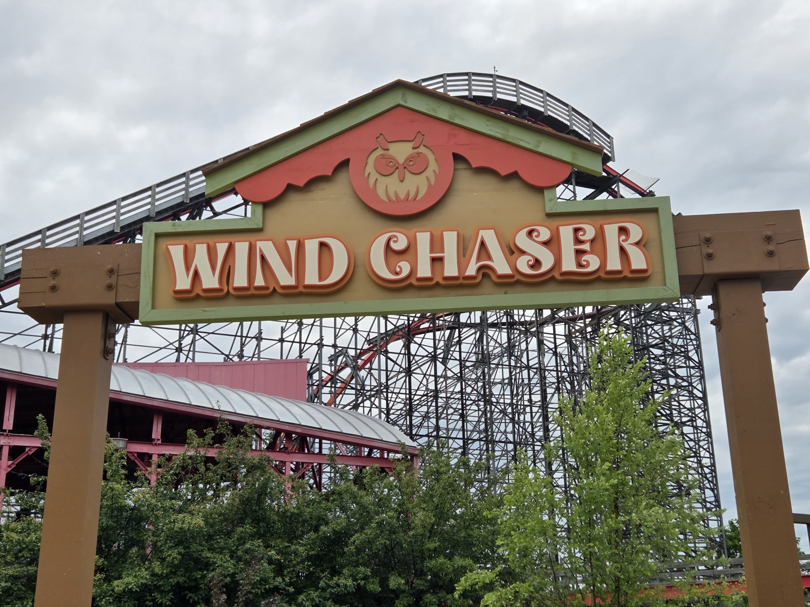
I had inadvertently saved the best ride for last. Wind Chaser felt like the best parts of Woodland Run (and more) without the painful lows of Woodland Run. The added inversions elevate the coaster and make it stand out compared to the other rides at Kentucky Kingdom like Woodland Run, Lightning Run, and Kentucky Flyer. I especially like the inversion during the initial drop, making it feel more thrilling and different. There were plenty of opportunities for airtime during the ride, and I was lifted out of my seat numerous times, only being bound by the lap bar. I enjoyed the ride so much that I rode it again, sitting in the very front. There wasn’t a huge difference between the first and second ride, but it was still enjoyable nonetheless. Honestly, Wind Chaser is the only ride I would intentionally go back to Kentucky Kingdom for.
Overall & Closing Thoughts
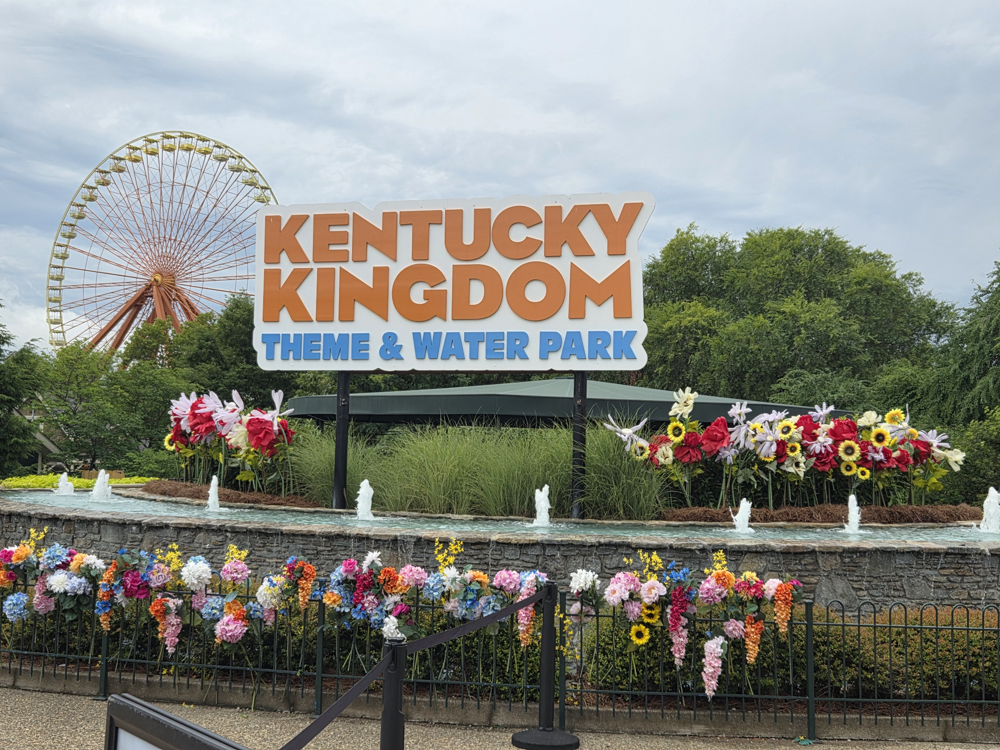
In the very loosest of senses, Kentucky Kingdom is a theme park, with the theme being “Kentucky.” However, my issue with Kentucky Kingdom being a “theme park” is that it is a hodge-podge of symbols relating to Kentuckian culture, with little attention to detail as to how these elements work with each other to elevate the theme.
Discovery Meadow is the area with the strongest worldbuilding in the park, with rides and attractions themed around wildlife in a meadow. All of the other sections in the park contain attractions that don’t tie into each other thematically. The only real “sections” of the park are “Kentucky Kingdom” and “King Louie’s Playground”, with the other sections being the water park, dining, and shopping. “King Louie’s Playground” is the “kiddie” section of the park, and “Kentucky Kingdom” contains attractions that don’t fit in elsewhere.
Kentucky Kingdom handles symbols of Kentucky by placing different symbols near each other with no rhyme or reason. Flying Fox and Kentucky Flyer, both rides themed around aviation, are on opposite sides of the park. The Bourbon Craft House is next to Skycatcher and Kentucky Flyer, all existing in Hurricane Bay. Symbols of horses, bluegrass, and aviation are all present in the park, but are strewn about throughout the park, rather than letting each element breathe in its own area. The theme for Busch Gardens Williamsburg, “The Old Country”, works because each section of the park is a dedicated country, exploring aspects of each respective country in-depth. BGW’s brand is tying these countries together to form “The Old Country” through displays like the park’s train, entrance gates, and heraldic pins for sale. The way Kentucky Kingdom creates its theme is the equivalent of throwing Kentuckian signs into a big pot and creating a “Kentuckian stew”, while BGW is crafting a “The Old Country” three course meal, with each section standing on its own as a unique and complete dish. While I enjoyed my experience at Kentucky Kingdom and I’m glad I went, I don’t think I’ll be going back anytime soon.